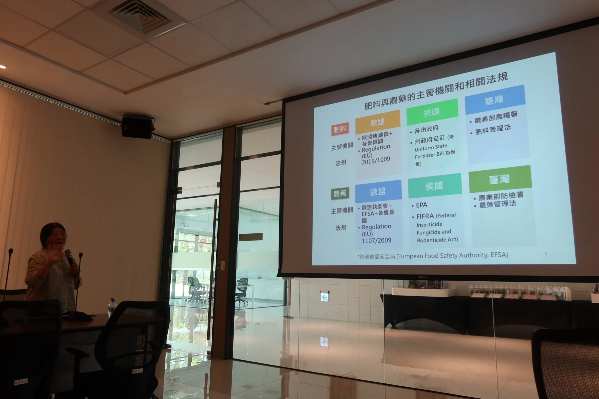
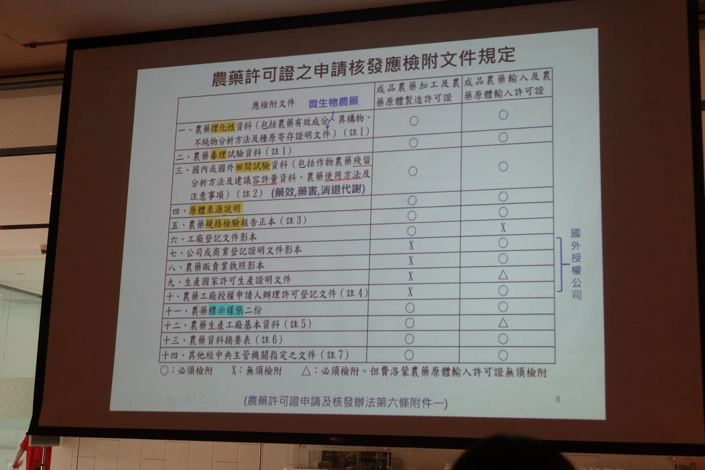
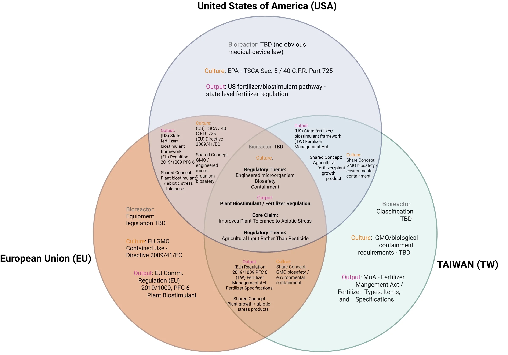
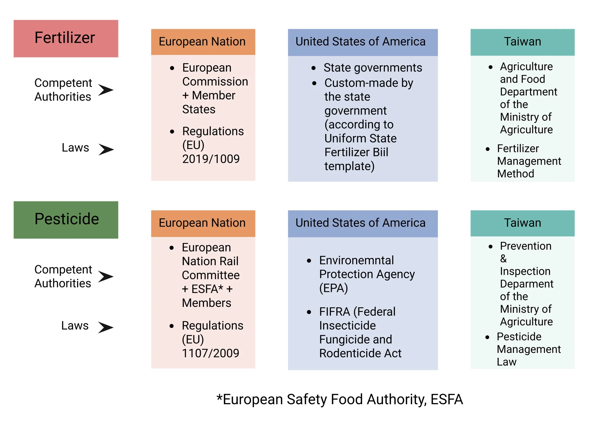
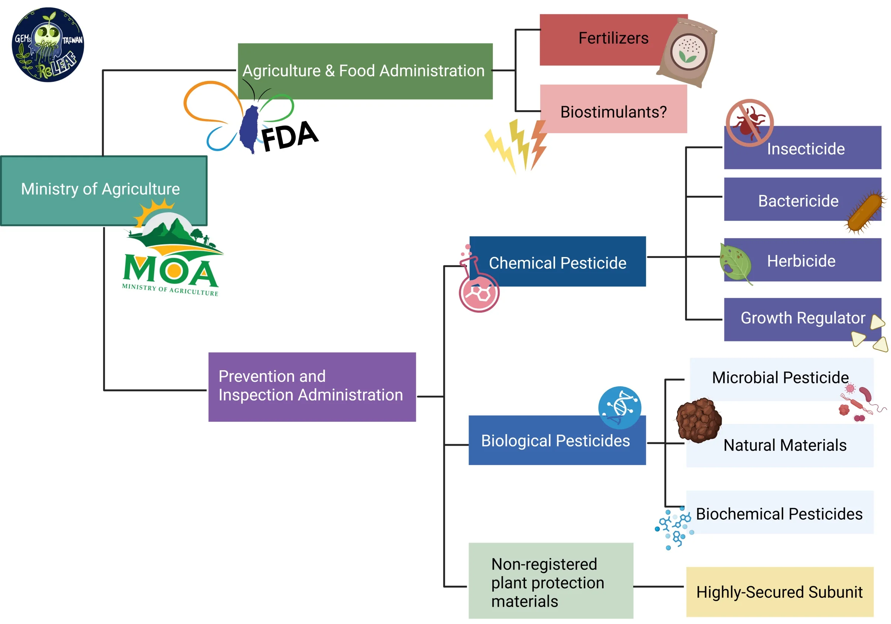
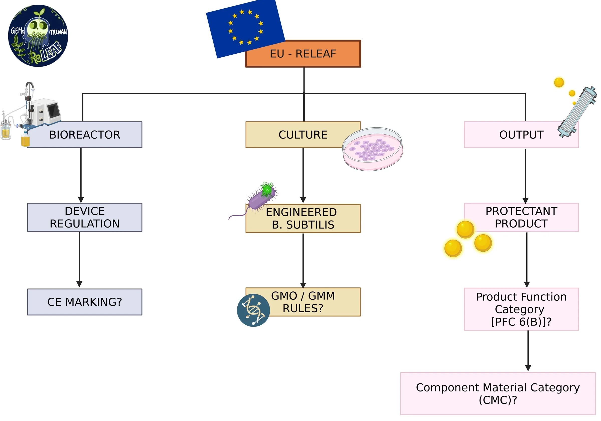
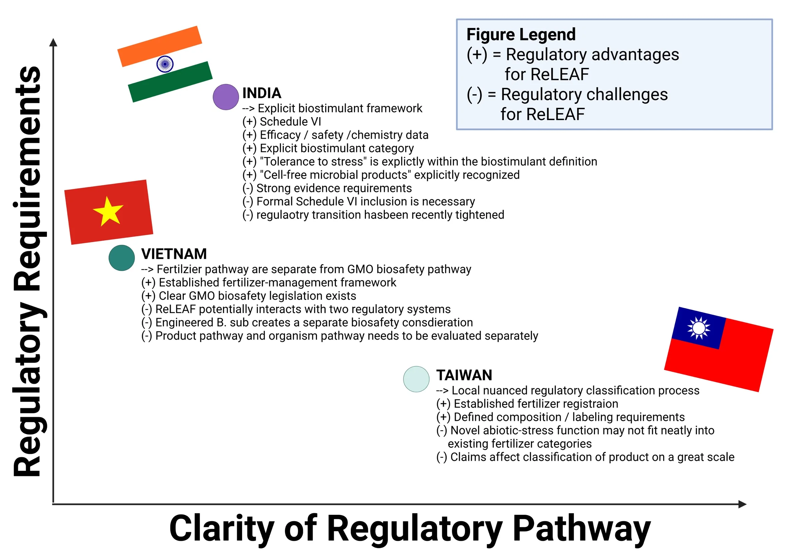

Overview
A protectant that works in the laboratory still has to be manufactured, labelled, sold and used legally before it reaches a farmer. The rules for that differ between countries: the same biological product may be regulated as a biostimulant, a fertilizer or a pesticide depending on its composition, its intended use and the claims made about it. We therefore studied regulation alongside the science and used it to ask an early design question: what would ReLeaf need to become in order to reach farmers legally and practically?
Agricultural biotechnology sits where several regulatory systems meet. Rules on agricultural inputs, product claims, environmental use and market access decide whether ReLeaf can be sold at all, and also which market should come first. The main lesson of this research is that geography governs the rules. A strategy that works in Taiwan does not transfer automatically to the United States or the European Union, so we analysed ReLeaf separately in all three.


Approach
We did not treat ReLeaf as a single regulatory object. We split the system into three connected components, each of which may fall under different rules: the bioreactor, the engineered Bacillus subtilis production culture, and the cell-free protectant output that reaches the plant. One legal classification for the whole system would not be enough.
For the protectant output we then followed a second chain:
function → claim → regulatory classification → requirements → market access
We started from the biological function each protectant is meant to provide, then asked how that function would be worded as a commercial claim, because intended use and claims can change a product's classification. Last, we listed the requirements that follow from each possible classification in each market. This kept three things apart: what ReLeaf does scientifically, what it claims commercially, and how a regulator may classify it legally. It also stopped us assuming that the engineered production system and the cell-free output share a regulatory status.
Product categories
The first question sounded simple: what kind of agricultural product is ReLeaf?


Fertilizers, plant biostimulants and pesticides can all raise agricultural productivity, but they are separate regulatory categories. In broad terms, fertilizers supply plant nutrients; plant biostimulants stimulate plant or rhizosphere processes to improve traits such as nutrient-use efficiency or tolerance to abiotic stress; and pesticides, or plant-protection products, control regulated pests or other harmful organisms. These are functional concepts for comparing systems. They are not identical legal categories everywhere, and both regulatory reviews we were given stress that jurisdictions can classify functionally similar products differently [14, 15].
The distinction matters for ReLeaf because our application is abiotic-stress resilience. BoPep4 and ACC deaminase (ACCD) are being investigated against salinity stress, and AtLEA14 against drought stress. We are not developing a product that controls a pathogen or a pest; we want plants to tolerate unfavourable conditions better. That fits the fertilizer and biostimulant route more closely than the pesticide route, but the fit has to be checked in each market, because each defines the categories differently.
EU definition as a reference point
Under Regulation (EU) 2019/1009, a plant biostimulant is an EU fertilising product that stimulates plant nutrition processes independently of the product's nutrient content, with the sole aim of improving one or more of four characteristics: nutrient-use efficiency, tolerance to abiotic stress, quality traits, or the availability of confined nutrients in the soil or rhizosphere [1, 2].
Tolerance to abiotic stress is the one that matches ReLeaf. That alone does not make ReLeaf a PFC 6(B) product: the final product must also meet the requirements on components, composition, safety, labelling, efficacy (whether the product achieves the effect it claims) and conformity. The definition does give us a legal concept that matches what ReLeaf is for.
Product claims
Classification depends on what a product contains, and also on its intended function and the claims made about it. The same biological product could be regulated differently if it is presented as improving tolerance to abiotic stress or as controlling pests and diseases.
ReLeaf's claims will therefore stay on abiotic-stress resilience, specifically salinity and drought, which is what BoPep4, AtLEA14 and ACCD are meant to address. We will not claim that the products control insects, pathogens or plant diseases, because those claims could bring in pesticide or plant-protection regulation.
Taiwan
Taiwan's framework separates a fertilizer pathway from a pesticide pathway, under the Ministry of Agriculture (MOA, 農業部). The Pesticide Management Act defines a pesticide broadly: beyond pest-killing substances, it includes preparations that regulate crop growth or affect plant physiology [9]. Calling a product a biological plant protectant therefore settles nothing. Its function, formulation and claims decide where it lands.

For ReLeaf this is a strategic decision. Our protectants are meant to improve tolerance to drought and salinity, so a fertilizer-oriented pathway may fit better than a pesticide one. ACCD shows why the choice needs care: it acts on ethylene-related plant physiology, but that mechanism alone does not decide whether the final product is a fertilizer, a biostimulant or a pesticide. The claims on the finished product and the way it is presented to users matter as much. We want a product whose intended function, scientific evidence and regulatory position agree with one another, and a category that can merely contain ReLeaf on a technicality is not enough.
Fertilizer classification
The Fertilizer Management Act defines a fertilizer as a product that supplies nutrients to plants or promotes nutrient use, and Article 5 requires a fertilizer registration certificate before a fertilizer can be manufactured, imported or sold [7]. Our protectants are not meant to supply nutrients; they are meant to improve tolerance to abiotic stress. We cannot assume that BoPep4, AtLEA14 or ACCD qualify as fertilizers. The final formulated product would have to fit a fertilizer category and specification that MOA recognises.
Taiwan's published classification has nine fertilizer categories, among them nutrient, organic and microbial fertilizers and plant growth auxiliary materials (植物生長輔助劑類) [8]. Each category's specification sets its permitted scope, principal components, limits on harmful substances, restrictions and testing requirements. Plant growth auxiliary materials are a possible route for our protectants, but whether a protein or peptide protectant fits has to be confirmed with the competent authority on the basis of the final formulation and claim. Our plan is to formulate the cell-free output as a defined agricultural input, characterise its composition and safety, show that it works against the stress it targets, and apply for the matching registration if MOA confirms the classification.
Registration and product standards
If a protectant is accepted into a fertilizer category, registration becomes the condition for selling it. Article 5 prohibits manufacture, import or sale without a certificate, and Article 7 requires the certificate to state the category, registered ingredients, physical characteristics, package quantity, manufacturer and manufacturing facility [7]. ReLeaf would therefore have to fix the composition and concentration of each commercial protectant; an undefined biological secretion cannot be registered.
Our design already separates the engineered production system from the cell-free output. The bioreactor makes the protectant under controlled conditions, and the commercial input would be characterised and standardised before use. For each protectant that means specifications for identity, concentration, purity, stability and efficacy in the final formulation, which would support the registration and keep every batch matched to its registered composition.
Labelling and advertising
Taiwan also regulates how registered fertilizers are presented. Article 19 requires fertilizer advertisements to show the registration number, category and registered ingredients and prohibits false or exaggerated advertising; Article 20 prohibits labelling or promoting a product as having fertilizer effects if it does not meet the applicable specification [7].
Our claims have to stay consistent with the classification. We would not make broad claims such as “protects crops from all stress” or “replaces pesticides”. The first Taiwan positioning would state only the tested function of each protectant, BoPep4 and ACCD for salinity stress and AtLEA14 for drought stress, backed by validated efficacy data and limited to what the registration accepts. That lowers the risk that the marketing itself pushes the product into another category.
Pesticide boundary
The second barrier is the Pesticide Management Act. Its Article 5 defines finished pesticides to include products that control harmful organisms and products that regulate crop growth or affect plant physiological functions [9]. Our protectants are designed to change how plants respond to stress. If the product or its claims are read as falling inside that definition, it would need pesticide registration and could not use the fertilizer pathway.
We will keep abiotic-stress protection clearly apart from pesticidal claims. The first products will not be marketed as killing, controlling or preventing pathogens, insects or other harmful organisms. This does not guarantee a fertilizer classification, which remains the authority's decision, but it is a more defensible basis for the fertilizer or plant-growth-input pathway. If MOA decides a protectant is a pesticide, Article 9 requires approval and registration before manufacture, processing or import, and Article 10 requires specifications, physicochemical and toxicological data, field-trial data and other documents (Figure 2) [9].
Production strain and containment
The engineered B. subtilis production strain is a separate question from the cell-free protectant. In our commercial model the farmer receives the bioreactor and the engineered culture as a closed production system; the microorganism is never intentionally released into the field. The strain may therefore be assessed differently from its output.
Containment is central to commercialisation. The culture stays inside the bioreactor, and the agricultural product is the cell-free output, with physical separation between culture and output stream. Before sale we would have to validate containment performance, operating and maintenance procedures and the response to failures, and confirm with the relevant Taiwanese authority which GMO or biotechnology requirements apply to an engineered strain used in a contained agricultural production system. Containment is an engineering and risk-management measure. It does not exempt ReLeaf from GMO regulation and it is not a legal classification; it is the design basis on which we would seek the right pathway. See Safety for the containment design.
Organic agriculture
Certified organic agriculture is a separate market. Taiwan's Organic Agriculture Promotion Act defines organic agriculture to exclude genetically modified organisms and their products, and the organic production standards prohibit genetically modified biological preparations and materials [10]. Because ReLeaf uses an engineered microorganism as its production platform, we will not position it as an organic input unless an authority first rules that the cell-free output is permitted. Farmers asked about this at our forum; the answer shaped the Human Practices decision to aim for a sustainable-farming label, not organic certification.
This does not stop ReLeaf from pursuing its sustainability goal. The first Taiwan market is conventional agriculture and sustainable-input use, where the value is fewer chemical inputs and more resilient crops, with the engineered organism kept out of the field.
Regulatory fragmentation
The regulatory reviews CH Biotech gave us show that Taiwan handles biostimulant-like products through more than one route [14, 15]. Some are registered under fertilizer categories such as organic fertilizers, plant growth auxiliary materials and microbial fertilizers. Others, whose claims concern plant defence, disease resistance, growth or stress resistance, are managed as registration-free plant-protection materials. A product's legal identity cannot be read from its ingredient; composition, intended function and claims have to be taken together. For ReLeaf that means developing the evidence and the claims side by side, and keeping to abiotic-stress resilience so the product does not drift toward plant-protection regulation.
Taiwan evaluation
Taiwan is where ReLeaf is being developed, so it can be tested directly against the local agricultural-input framework. Its main challenge is classification. The Fertilizer Management Act offers a possible route through fertilizer and plant-growth-auxiliary categories, but ReLeaf must show that its final formulation fits one of them, and the Pesticide Management Act draws a firm line around claims about plant physiology and pest control.
Our Taiwan strategy is a non-pesticidal, abiotic-stress position; strict containment of the engineered strain; standardised cell-free outputs; and formal confirmation of the fertilizer classification before any sale. Taiwan stays our validation and early-development market. The EU is our first international market, because its PFC 6(B) category matches an abiotic-stress biostimulant more directly.
European Union
The EU regulates harmonised fertilising products under Regulation (EU) 2019/1009, the Fertilising Products Regulation (FPR) [2]. It sorts products into Product Function Categories (PFCs), one of which is PFC 6, plant biostimulants. PFC 6 is divided into microbial (6A) and non-microbial (6B) biostimulants. ReLeaf's output is meant to be cell-free proteins and peptides, not living microorganisms, so PFC 6(B) is the pathway to investigate.

PFC 6(B) is a possible pathway, not an automatic classification or an approval. ReLeaf would still have to show that its products meet the requirements on function, components, composition, safety, labelling and conformity assessment before placing them on the market. What the EU framework offers is a category whose intended function is close to the problem ReLeaf is trying to solve, so the protectants do not have to be squeezed into the pesticide route.
Function and composition
The FPR asks two separate questions. The PFC asks what the product does. The Component Material Categories (CMCs) ask what it is made from and whether those materials are permitted in an EU fertilising product [2]. Meeting PFC 6(B) alone does not open the EU market.
PFC 6(B). Does the final cell-free formulation meet the requirements for a non-microbial plant biostimulant? The regulation does not classify a product by the molecule it contains; the claimed PFC function must be supported by the product's mode of action, the relative content of its components or another relevant parameter. If the commercial product claims better salinity tolerance, our experimental data must support that claim, and the same holds for drought.
CMC. Our output is made biologically; it is not a conventional fertilizer salt or extract. Whether the material falls within an applicable CMC, and meets that category's requirements, has to be confirmed separately during product development.
Efficacy evidence
A plant biostimulant must show the effects claimed on its label for the plants it names. Regulatory positioning therefore cannot be separated from the experiments on the Plants page: they establish whether the protectants work, and the same data would support the claimed biostimulant function.
| Protectant | Intended function | Evidence that would support the claim |
|---|---|---|
| BoPep4 | Better tolerance to salinity stress | Plant growth and physiological measurements under controlled NaCl stress |
| AtLEA14 | Better tolerance to drought and other abiotic stresses | Controlled drought or stress experiments with physiological measurements |
| ACCD | Less stress caused by excess ethylene production | Physiological and stress-response measurements under salinity or related abiotic stress |
The third column is a plan. It lists the experiments a claim would need, not results we have.
Safety and quality
Efficacy asks whether the product does what it claims; safety asks whether using it creates unacceptable risk; quality asks whether every marketed batch matches its declared composition. For ReLeaf, quality control would cover the identity and concentration of the intended protectant, consistency between batches, microbial contamination and stability. These checks matter more than usual because the protectants are made inside the bioreactor and separated from the engineered culture before use.
Conformity assessment and CE marking
Once the PFC and CMC requirements are met, an EU fertilising product goes through the conformity assessment procedure that applies to it. The manufacturer completes the assessment, draws up an EU Declaration of Conformity and affixes the CE marking before placing the product on the market [1, 2]. The full EU pathway is:
PFC classification → CMC assessment → safety and quality requirements → efficacy evidence → conformity assessment → EU Declaration of Conformity → CE marking → EU market access
This matters for strategy because a compliant CE-marked fertilising product can be sold across the EU single market under one harmonised framework, without a separate approval in every Member State.
United States
Unlike the EU, the United States has no single harmonised federal registration pathway for plant biostimulants. The requirements depend on the product's composition, intended use and claims, and on the state or states where it is sold. A classification established in the EU or Taiwan does not carry over, so the US needs its own assessment of the final product, its claims and its target states.
![A flow diagram for the United States. The bioreactor leads to equipment and product safety; the liquid culture leads to USDA-APHIS 7 CFR 340, import and interstate movement, and APHIS review; the protectants lead to intended use, which splits into abiotic stress claims going to state fertilizer or biostimulant registration and pest or regulator claims going to EPA FIFRA registration. All branches meet at commercialization, which splits into federal requirements (USDA, EPA, FDA) and state requirements varying by state.](../assets/img/laws-and-regulations/us-component-breakdown.webp)
Federal and state structure
At the federal level, oversight of biotechnology is shared among the Environmental Protection Agency (EPA), the U.S. Department of Agriculture (USDA) and the Food and Drug Administration (FDA) under the Coordinated Framework for the Regulation of Biotechnology. They do not give approvals in sequence; which of them is involved depends on the product and its intended use. The reviews we used describe EPA's role in pesticide regulation under the Federal Insecticide, Fungicide, and Rodenticide Act (FIFRA), while fertilizer registration is handled mainly by the states, many of them using model rules from the Association of American Plant Food Control Officials (AAPFCO) [14, 15].
The analysis therefore starts with three questions: what is ReLeaf, what does it claim to do, and where will it be used? There is no single nationwide fertilizer pathway to assume. Recent US developments recognise plant biostimulants more explicitly within fertilizer frameworks, but the system is still more decentralised than the EU's, so we treat the US as a state-by-state expansion market.
Engineered culture
The engineered B. subtilis culture needs its own assessment, separate from the cell-free output. Although ReLeaf keeps the bacteria inside the bioreactor, the culture is still genetically engineered biological material and may fall under biotechnology requirements depending on its use and the jurisdiction. The bioreactor keeps the bacteria physically apart from the farm environment and lets only the cell-free products out. Physical containment does not by itself exempt the culture; the requirements still depend on the organism, the use and the jurisdiction.
Biostimulants and plant regulators
Claims matter even more in the United States, because some claims bring a product under FIFRA. EPA defines plant regulators within the pesticide framework, so a product claiming to regulate plant growth or physiological processes may be analysed differently from one sold as a fertilizer or biostimulant [4, 5, 6]. ReLeaf's claims will focus on tolerance to abiotic stresses such as salinity and drought, and will not mention pest or disease control. That does not guarantee a classification, but it gives a clear basis for working out which requirements apply.
State requirements
A product that needs no federal pesticide registration may still face fertilizer or biostimulant requirements in each state. Selling in the US would mean identifying, state by state, the rules on registration, labelling, composition and efficacy. That is the main difference from the EU:
| European Union | United States | |
|---|---|---|
| Main structure | Harmonised EU fertilising-products framework | Federal agencies plus state requirements |
| Plant biostimulants | PFC 6 under Regulation (EU) 2019/1009 | No single harmonised federal pathway |
| Product claims | Decide the PFC | Decide which regulator has jurisdiction |
| Fertilizer requirements | EU-wide for CE-marked products | Mainly state-specific |
| Engineered microorganisms | Assessed separately from the final product | Federal jurisdiction depends on product and use |
| Market strategy | One EU-level pathway | Choose target states one at a time |
In the US ReLeaf has to answer three questions separately: how the engineered culture is regulated, how the cell-free protectant is classified, and what each target state requires. One federal approval would not give nationwide access.
Protectants
We also examined the three protectants one at a time. BoPep4 is being investigated for tolerance to salinity stress; AtLEA14 for drought tolerance [11]; ACCD for its role in stress physiology, particularly under salinity [12]. Their mechanisms differ, but their agricultural purpose is the same: plants that cope better with abiotic stress. Commercially this is useful. Instead of three unrelated products with three regulatory identities, ReLeaf can build one coherent product concept around abiotic-stress resilience.
| Protectant | Intended application | Current positioning |
|---|---|---|
| BoPep4 | Salinity stress | Plant biostimulant |
| AtLEA14 | Drought stress | Plant biostimulant |
| ACCD | Salinity stress | Plant biostimulant |
Positioning
We compared two broad strategies. A pesticide-oriented strategy suits products that claim pest control, which is not what ReLeaf does: it is not designed to kill pathogens or insects. A fertilizer or plant-biostimulant strategy matches ReLeaf's scientific aim and lets us talk about plant resilience, stress tolerance and agricultural performance.
The choice also steers the science. If ReLeaf is sold as a stress-resilience product, our experiments have to support stress-resilience claims, so the regulatory work feeds directly into the plant assays and product development.
Case studies
Existing products show how classification works in practice. We looked at two seaweed-based biostimulants: Kelpak, for how one product is treated in different markets, and Sagarika, for how a market's rules change over time.
Kelpak
Kelpak is a seaweed-based product that has been studied on salt-stressed crops [13], and the same underlying product is sold under three different frameworks. Its classification depends on the market's law as well as on the product's composition, function and claims.
- European Union. Kelpak holds CE marking under Regulation (EU) 2019/1009 and is sold as an EU fertilising product under the harmonised framework; the company presents the CE marking as supporting its position as a plant biostimulant.
- Taiwan. Kelpak is registered as a fertilizer, listed in Taiwan's agricultural product database as 藻原萃 under the category 液態雜項有機質肥料 (liquid miscellaneous organic fertilizer). A seaweed product can therefore enter Taiwan through the fertilizer framework.
- United States. Kelpak's liquid seaweed concentrate is sold as a 0-0-1 (N-P-K) product and is registered as an organic input through the Washington State Department of Agriculture's Organic Material Registration Program; the company also cites approval for organic farming under the USDA National Organic Program.
| Market | How Kelpak is treated | What it shows |
|---|---|---|
| European Union | CE-marked EU fertilising product | A harmonised plant-biostimulant framework |
| Taiwan | Registered fertilizer | A national fertilizer classification |
| United States | Agricultural input with organic-input approval; requirements can depend on the state | A decentralised system |
Registering in one market does not settle classification in another. Kelpak changed the question we ask: from “what is ReLeaf?” to “what is ReLeaf under the rules of the market where we want to sell it?” We stopped assuming that one successful pathway could be copied across countries and began evaluating and comparing each market on its own terms. It also showed why classification belongs in product development: ReLeaf's claims, its final formulation and the separation of the engineered culture from the cell-free output can all change the pathway available to us.
Sagarika
Sagarika shows a different problem: a product category that grows faster than the rules that govern it. It is a seaweed biostimulant made from Kappaphycus alvarezii with technology licensed from India's CSIR-Central Salt and Marine Chemical Research Institute (CSIR-CSMCRI), commercialised by Aquagri Processing and marketed by the Indian Farmers Fertiliser Cooperative (IFFCO) from 2016.
Before 2021, India's Fertiliser (Inorganic, Organic or Mixed) Control Order, 1985 (FCO) did not specifically regulate biostimulants, so products like Sagarika could be sold without dedicated requirements. The size of the market exposed the gap. India's Ministry of Agriculture and Farmers Welfare reported about 30,000 biostimulant products on the market before biostimulants were brought into the FCO, and industry discussions pointed to the lack of standardised testing and the difficulty of telling genuine products from spurious ones.
The Government of India responded with Notification S.O. 882(E) of 23 February 2021, which brought biostimulants into the FCO under a new Clause 20C with requirements on specifications, registration, composition, efficacy information and quality control. Its Schedule VI sorts biostimulants into categories that include botanical extracts such as seaweed extracts, biochemicals, protein hydrolysates and amino acids, vitamins, and cell-free microbial products. The last category is notable for us because ReLeaf's output is also cell-free, although its classification in India would still have to be determined.
A product can start in a regulatory gap, and rising adoption can push a government to write definitions, quality standards, efficacy requirements and registration procedures. We cannot assume every future market already has a category suited to a cell-free product made by an engineered microorganism. We should find the gaps early and design ReLeaf around what regulators are likely to demand: a clear product identity, reproducible composition, demonstrated efficacy, safety, traceability and containment of the production organism. Kelpak shows that regulatory identity can change across borders; Sagarika shows that it can change over time.
Expansion markets
Beyond the first markets, other regulatory systems will need their own evaluation. We treat them as part of the future commercialisation strategy, not as core case studies.
| Market | Main regulatory considerations |
|---|---|
| Philippines | Fertilizer or agricultural-input registration; GMO biosafety requirements |
| Vietnam | Fertilizer circulation requirements; GMO biosafety regulation |
| Thailand | Fertilizer regulation; contained-use requirements for genetically modified microorganisms |
| Indonesia | Agricultural-input regulation; GMO biosafety requirements |
Timelines, estimated approval periods and the order of market entry for these countries are in the business plan on Entrepreneurship.

CH Biotech exchange
Our reading was supplemented by an exchange with Cheng Han Biotechnology (CH Biotech, 正瀚生技), a Taiwanese company that develops and registers biostimulants, on 9 July 2026. Their experience gave us a practical view of how regulation differs between Taiwan, the United States and the EU. The visit is recorded on Human Practices.
Before the visit we had worked only from legislation and regulatory documents, and some questions could not be answered from legal text: how companies choose a product's position, how classification affects commercialisation, and how requirements differ between markets in practice. We prepared a short paper setting out our first interpretations and questions, and used it as the framework for the discussion. The exchange confirmed that product classification and intended claims have to be settled early in development, which mattered for ReLeaf because the same output could be positioned differently depending on its claims, composition and market. It also separated what can be established from the regulations from what has to be learned from industry. The literature gave us the legal framework; CH Biotech showed us how those requirements drive decisions on positioning, market choice and commercial planning.
After the exchange we treated regulation as a design constraint. That supported three decisions: keeping the engineered B. subtilis culture apart from the cell-free output, centring the product on abiotic stress, and treating Taiwan, the EU and the US as separate regulatory environments. The discussion was a practical cross-check on our reading of the law, not a substitute for what government authorities require.
Business plan
The regulatory research shaped ReLeaf's business plan. Knowing how ReLeaf could be classified in each market moved the question from whether the technology works to whether it has a realistic route to farmers.
Where to sell. Market size alone does not pick the target. A large agricultural market is a poor first choice if ReLeaf's function does not fit its regulatory framework, because entry would need extra testing, registration or changes to our claims. Our market analysis weighs regulatory accessibility alongside demand, customers, distribution channels and opportunity.
Who the customers are. ReLeaf is not sold as a laboratory protein. The plan has to account for the form in which the product reaches growers, the organisations able to distribute agricultural inputs, and the regulatory responsibility for placing the product on the market. That ties the regulatory work to our analysis of farmers, agricultural organisations, distributors and partners.
What others did. Kelpak showed how a biological input can be positioned differently across markets. We used the case studies to find patterns in how such products move from research to sale, not as templates, and to judge which parts of ReLeaf's strategy could be adapted and which need a different approach. CH Biotech's experience added the industry view of Taiwan, the US and the EU.
Together these changed the plan. Instead of one global strategy applied everywhere, each market is a separate opportunity with its own regulatory conditions, and the business plan follows the regulatory landscape.
Where ReLeaf sits
| Taiwan | European Union | United States | |
|---|---|---|---|
| Biostimulant framework | No single dedicated framework identified in our sources | Explicit category under EU fertilising products | Decentralised, state-dependent |
| Likely ReLeaf route | Fertilizer or plant-growth-input pathway | PFC 6(B), under investigation | Fertilizer or beneficial-substance pathway, by state |
| Main classification issue | Fertilizer or pesticide | PFC 6(B) and CMC eligibility | State-specific classification |
| Key claim issue | Avoid an unintended pesticide or plant-growth-regulator position | Claim must match the PFC function | Claims can change which regulator applies |
| Production organism | Separate consideration | Separate consideration | Separate consideration |
| Current strategy | Development and validation market | First international market | Future expansion market |
The analysis brought us back to the question we started with: what is ReLeaf? Part of the answer depends on where it is sold. Scientifically ReLeaf is the same project in all three markets, but its commercial and regulatory identity is not. The same protectants may need different pathways depending on jurisdiction, formulation, intended use and claims. Our position is abiotic-stress resilience, not pest control, which makes a fertilizer or plant-biostimulant pathway the better match. The regulatory process is a sequence of questions, not a single approval:
- What does ReLeaf do?We defined the biological function of each protectant and the problems it addresses: salinity and drought stress.
- What will we claim?Improved plant resilience to abiotic stress. No claim to control pests or pathogens.
- Which category matches those claims?We compared the fertilizer, biostimulant and pesticide pathways in each target market.
- What follows from that category?Once a pathway is identified, its market-specific requirements are the next barriers ReLeaf has to clear before sale.
- Is the market still worth entering?We weighed the pathway, the market opportunity, the customers and the cost of compliance to decide whether a region is a realistic first market.
This led us to the European Union as our first international market. Its fertilising-products framework has an explicit legal category for plant biostimulants, including non-microbial biostimulants under PFC 6(B), and names tolerance to abiotic stress as a biostimulant function. That is a strategic priority. It does not mean EU approval will be simpler or faster, that ReLeaf is approved, or that PFC 6(B) applies to our final product. It gives us a clear direction for the evidence, the formulation and the commercial plan. Taiwan and the United States remain markets for ReLeaf, each with its own pathway to evaluate.
What is still unconfirmed
- Taiwan, output. MOA has not confirmed that a protein or peptide protectant fits the plant growth auxiliary materials category or any other fertilizer category.
- Taiwan, culture. No regulator has confirmed a contained-use classification for the bioreactor and its engineered culture, and we have not yet named the rule that would apply.
- EU. PFC 6(B) function and CMC eligibility for a biologically produced cell-free protein are both unconfirmed.
- United States. No target state has been chosen, and the federal rule for the engineered culture has not been settled (Figure 3 and Figure 7 disagree).
- Bioreactor. The equipment rules for the device have not been identified in any market.
- Efficacy. The experiments that would support a label claim for each protectant are planned, not complete.
References
- European Commission. (n.d.). Fertilising products. single-market-economy.ec.europa.eu
- European Parliament & Council of the European Union. (2019). Regulation (EU) 2019/1009 of 5 June 2019 laying down rules on the making available on the market of EU fertilising products. Official Journal of the European Union, L 170, 1–114. EUR-Lex
- European Parliament & Council of the European Union. (2014). Directive 2014/68/EU of 15 May 2014 on the harmonisation of the laws of the Member States relating to the making available on the market of pressure equipment (recast). Official Journal of the European Union, L 189, 164–259. EUR-Lex
- U.S. Environmental Protection Agency. (2020). Draft guidance for plant regulator products and claims, including plant biostimulants. epa.gov
- U.S. Environmental Protection Agency. (n.d.). Pesticide labeling questions & answers. epa.gov
- U.S. Environmental Protection Agency. (n.d.). Biopesticides. epa.gov
- 農業部 Ministry of Agriculture. 肥料管理法 [Fertilizer Management Act]. law.moa.gov.tw
- 農業部 Ministry of Agriculture. 肥料種類品目及規格 [Fertilizer categories, items and specifications]. law.moa.gov.tw
- 農業部 Ministry of Agriculture. 農藥管理法 [Pesticide Management Act]. law.moa.gov.tw
- 農業部 Ministry of Agriculture. (2018). 有機農業促進法 [Organic Agriculture Promotion Act]. law.moa.gov.tw
- Jia, F., Zheng, C., Huang, J., et al. (2014). Overexpression of Late Embryogenesis Abundant 14 enhances Arabidopsis salt stress tolerance. Biochemical and Biophysical Research Communications, 454(4), 505–511. doi:10.1016/j.bbrc.2014.10.136
- Liu, C.-H., et al. (2021). 1-Aminocyclopropane-1-carboxylate deaminase gene in Pseudomonas azotoformans is associated with the amelioration of salinity stress in tomatoes. Journal of Agricultural and Food Chemistry. PubMed 33464897
- Sogoni, A., Ngcobo, B. L., Jimoh, M. O., Kambizi, L., & Laubscher, C. P. (2024). Seaweed-derived bio-stimulant (Kelpak®) enhanced the morphophysiological, biochemical, and nutritional quality of salt-stressed spinach (Spinacia oleracea L.). Horticulturae, 10(12), 1340. doi:10.3390/horticulturae10121340
- 袁秋英. (n.d.). 植物生物刺激素國際法規的發展趨勢：全球監管模式與產業因應策略 [Trends in international regulation of plant biostimulants: global regulatory models and industry strategies]. 正瀚生物科技股份有限公司 (CH Biotech). Private source provided for research use.
- 袁秋英. (2024). 生物刺激素的發展趨勢與各國法規管理現況 [Development of biostimulants and their regulation in different countries]. 正瀚生物科技股份有限公司 (CH Biotech).